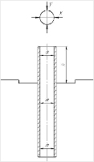
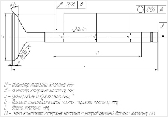

Работая на рынке оказания услуг по механической обработке деталей двигателя внутреннего сгорания (ДВС), сталкиваемся с определенным набором вопросов возникающих у наших Заказчиков услуг по механической обработке головок блоков цилиндров (ГБЦ). Мы с удовольствием расскажем об основных операциях при восстановительной механической обработке ГБЦ. Технико- экономические характеристики ДВС, а это мощность, крутящий момент, расход топлива, потребление масла и другие, в первую очередь зависят от совершенства процессов формирующихся правильной работой элементов головки блока цилиндров. Головка блока цилиндров в ДВС выполняет сразу несколько важнейших функций.
ГБЦ — это часть ДВС участвующая в:
Такая сложная система механизмов комплектующих ГБЦ требует очень внимательного обследования и обмера перед началом определения путей проведения ремонта и механической обработки. Перед проведением обследования, ГБЦ разбирается от всего навесного оборудования, тщательно моется, очищается от нагара, отложений в камерах сгорания, коллекторных каналах, полости водяной рубашки, масленых каналах осмотром проверяется на наличие трещин, сколов, кавитационных раковин. Наиболее распространенными дефектами головок блоков цилиндров являются:
Приводим последовательность выполнения стандартных операций восстановления и механической обработки ГБЦ принятые у нас в сети цехов «ПроМотор». Технологические операции Заказчик может заказать из перечня выполняемых работ. Приводим основные виды выполняемых операций:
При обращении к нам в мастерские, Заказчик специалист по ремонту ДВС, согласно принятых у нас «Правила приема и выполнения работ по механической обработке и восстановительного ремонта деталей двигателя внутреннего сгорания (ДВС)» обязан провести обмер параметров ГБЦ, предоставить параметры по которым необходимо провести механическую обработку. При отсутствии измерительного инструмента у Заказчика работ, Вы можете заказать операцию «Обмер» по параметрам принятых у нас на производстве, для принятия Заказчиком правильных путей выполнения механической обработки ГБЦ. При отсутствии параметров ГБЦ у Заказчика, наши специалисты могут предоставить существующую у нас литературу или усредненные параметры принятые или рекомендованные мировыми лидерами в производстве ДВС.
Операция «Обмер ГБЦ» (по параметрам, принятым у нас).
Специалист проводит визуальный осмотр детали, фиксирует наличие повреждений, раковин, трещин, сколов.
Шаг первый: Обмер направляющих втулок клапана (н.в.к.) со стороны «Впуск» и обмер направляющих втулок клапанов со стороны «Выпуск». Обмер внутреннего диаметра проводится измерительным инструментом — нутромер. Проводим измерения направляющих втулок, как по диаметру, так и по нарушению геометрии поверхности с точностью — 0.01мм; Проводим измерения высоты установки, возвышение н.в.к. над плоскостью.
Схема обмера направляющей втулки клапана
Результаты обмера фиксируются в Карте выполненных работ.
По результатам обмера выбираются пути ремонта направляющих втулок клапанов.
Шаг второй: Обмер клапанов со стороны «Впуск» и обмер клапанов со стороны «Выпуск». Обмер проводится для каждой группы клапанов отдельно. Операция обмера включает в себя замер параметров:
Схема обмера направляющей втулки клапана
Результаты обмера фиксируются в Карте выполненных работ.
Внимание:
Развертками поправлять размер направляющей втулки с установленным бронзовым вкладышем — запрещено!
Такая операция со снятием слоя металла вкладыша, уменьшает величину «натяга», что приведет к сдвигу вкладыша во время работы ГБЦ.По результатам обмера выбираются пути ремонта направляющих втулок клапанов.